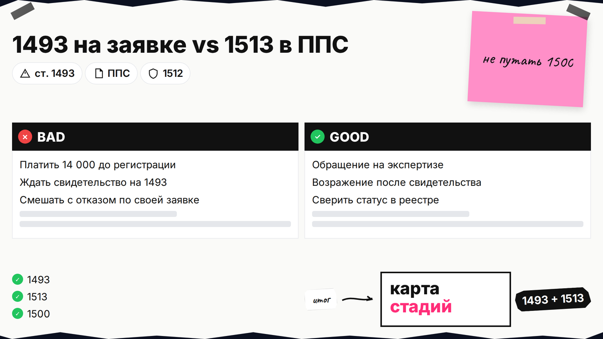
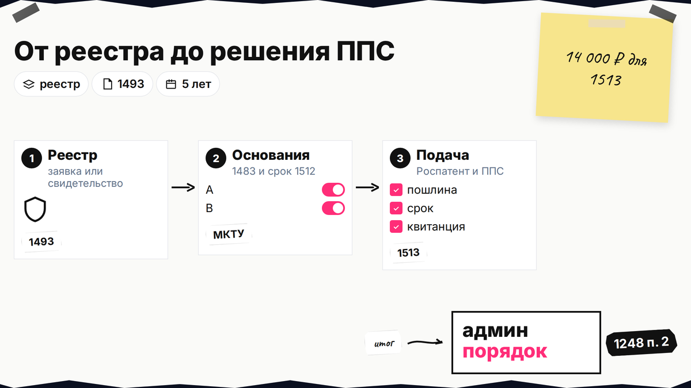
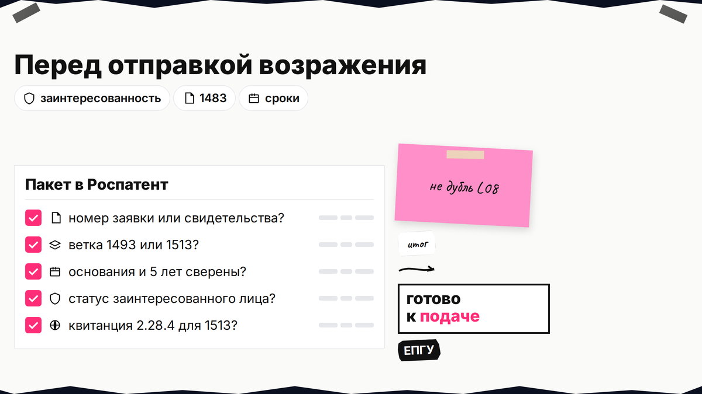

Конкурент подал заявку или уже получил свидетельство на имя, похожее на ваш бренд, а в поиске смешали "оспаривание", "возражение" и адрес Роспатента. Оспаривание товарного знака в Роспатенте - не один бланк: на экспертизе чужой заявки идет обращение по ст. 1493, после регистрации - возражение по ст. 1512-1513 в ППС с пошлиной 14 000 руб. Ниже вы пройдете карту стадий, основания и адрес подачи; пошаговую подачу и заседание возьмете из гайда по возражению против регистрации (L08, ссылка после публикации на сайте).
TL;DR / Быстрый инсайт: "Оспаривание в Роспатенте" в быту - административный спор (ст. 1248 п. 2): до регистрации - обращение ст. 1493 (учет при экспертизе, ст. 1499); после свидетельства - возражение ст. 1513 по ст. 1512, 14 000 руб. (п. 2.28.4). ППС - часть Роспатента. Отказ по своей заявке - ст. 1500, не эта карта.
ППС (Палата по патентным спорам) - коллегия внутри Роспатента, которая рассматривает возражение против регистрации уже выданного свидетельства. Заинтересованное лицо - владелец старшего знака, лицензиат или иной участник рынка, которому чужая охрана мешает законно продавать под своим именем. МКТУ - номера классов товаров и услуг в заявке; без однородности спор по сходству (п. 6 ст. 1483) обычно не выигрывают. Материал на 30.10.2026 не заменяет консультацию поверенного.

Оспаривание предоставления правовой охраны зарегистрированному знаку - ст. 1512-1513, исход - недействительность охраны. На стадии чужой заявки - обращение (ст. 1493); в SEO его зовут "возражением на заявку", но это не возражение в ППС с 14 000 руб. Публикация сведений о заявке в официальном бюллетене (ст. 1493 п. 1) - ориентир, когда третьи лица узнают о чужой подаче. Суд по ст. 1514 - отдельная ветка от коллегии ППС.
Делайте: найдите номер заявки или свидетельства в Поисковой платформе. Не делайте: путать атаку на чужой знак с возражением заявителя на отказ по своей заявке (ст. 1500, 9 000 руб. по 2.28.2).

| Стадия | Документ | Норма | Куда | Пошлина | Исход |
|---|---|---|---|---|---|
| Заявка на экспертизе | Обращение | ст. 1493 | Роспатент (учет при экспертизе) | Без 2.28.4 | Отказ в регистрации |
| Есть свидетельство | Возражение против охраны | ст. 1512, ст. 1513 | Роспатент, ППС | 14 000 руб. | Недействительность охраны |
| Отказ по вашей заявке | Возражение заявителя | ст. 1500 | Роспатент / ППС | 9 000 руб. (2.28.2) | Отмена или подтверждение отказа |
На запрос "куда подается возражение на заявку на товарный знак" отвечайте: обращение по ст. 1493 в Роспатент, пока нет свидетельства. "Куда отправлять возражение против предоставления правовой охраны" - туда же, с 14 000 руб. и номером свидетельства; рассмотрение ведет ППС (Правила 644/261). Адресат один - федеральный орган; меняются стадия объекта, основание и пошлина.
Делайте: сверить статус в реестре перед отправкой. Не делайте: платить 2.28.4 за "оспаривание" еще не зарегистрированной заявки.

| Основания | Пункты ст. 1483 | Срок | Кто подает |
|---|---|---|---|
| Абсолютные (п. 2 пп. 1 ст. 1512) | п. 1-5, 8, 9 | Весь срок охраны | Часто любое лицо (п. 3 ст. 1512) |
| Относительные (п. 2 пп. 2) | п. 6, 7, 10 (сходство, однородность) | 5 лет с публикации регистрации | Заинтересованные (ст. 1513 п. 2) |
Делайте: для сходства соберите однородность МКТУ и старший знак (см. если знак занят). Не делайте: отсчитывать 5 лет от подачи заявки конкурента.
По п. 2 ст. 1512 (сходство, п. 6-7, 10 ст. 1483) возражение подает заинтересованное лицо по ст. 1513 п. 2, а не случайный конкурент без своего знака или фактического использования. На стадии ст. 1493 формально обратиться может любое лицо, но для доводов о сходстве готовьте свидетельство, заявку или документы о реальном обороте.
Делайте: в тексте обращения или возражения укажите номер вашего знака и пересечение перечней МКТУ. Не делайте: копировать чужой шаблон без доказательства вашей позиции на рынке.
1493: номер заявки, доводы по 1477 и 1483, без 2.28.4; экспертиза учитывает обращение (ст. 1499), но отмена не гарантирована; результат - отказ в регистрации, а не аннулирование свидетельства. 1513: номер свидетельства, 14 000 руб., регистрация возражения до 5 раб. дней, формальная проверка до 2 месяцев, коллегия ППС, отзыв правообладателя за 10 раб. дней до заседания (Правила 644/261); результат - признание охраны недействительной (полностью или частично).
Календарь, доказательства и формулировки - в материале L08 (пошаговый гайд, ссылка после публикации), без дубля здесь. Фраза "возражение на заявку в порядке ст 1493" = обращение с номером заявки в шапке. Успех по 1493 не равен автоматическому аннулированию: конкурент может доработать обозначение и подать новую заявку, если вы не закрепили права на свой бренд.
Делайте: решить заранее, достаточно ли блокировать заявку или нужно снимать свидетельство. Не делайте: ждать регистрации конкурента, если уже идет 5-летний срок после публикации его регистрации.
Споры о знаках сначала идут в Роспатент (ст. 1248 п. 2). Решение ППС можно оспорить в суде (ст. 1513 п. 4); прямой суд - ст. 1514. Параллельно вести тот же спор в ППС и в суде рискованно - стратегию согласуйте с юристом. Если административный порядок не подошел по предмету или срокам, не подменяйте его самодельной схемой "сразу в суд" без анализа оснований по ст. 1483.
Делайте: сохранять решения и сроки обжалования. Не делайте: игнорировать отзыв правообладателя на заседании по 1513.
Каналы: почта, приемная, электронно через ЕПГУ (п. 4 Правил). В шапке: вид документа, номер заявки или свидетельства, контакты, приложения, квитанция 2.28.4 (для 1513). Способы оплаты и сроки подтверждения пошлины для ППС - в пошаговом гайде L08, здесь фиксируем только адресата: всегда федеральный орган, а не "отдельная ППС по другому адресу".
Схема: реестр → 1493 или 1512-1513 → основания 1483 и срок → пакет → Роспатент → (1513) ППС → решение → суд при необходимости
Делайте: вести таблицу дат бюллетеня и крайних сроков по 1512. Не делайте: верить SEO про "5000 руб." или "3 месяца" без привязки к вашей ветке и тарифам Роспатента (2.28.4).
Если после карты остаются вопросы по доказательствам сходства или по выбору между обращением и возражением, сверьте факты с поверенным до оплаты пошлин. Лирейт помогает с регистрацией и защитой товарного знака; смежные материалы - рубрика "Товарный знак" и чек-лист проверки перед подачей.
Материал проверен: редакция Лирейт, практика оспаривания в Роспатенте.
Достоверность данных: ст. 1248, 1493, 1499, 1512-1513, 1483, Правила 644/261, 2.28.4 сверены с КонсультантПлюс и rospatent.gov.ru на 30.10.2026. Показы Яндекс Вордстат не запрашивались.
Направьте обращение в Роспатент по ст. 1493 с номером заявки до решения о регистрации. Пошлина 2.28.4 - для оспаривания уже выданной охраны по ст. 1513.
В Роспатент, рассмотрение ППС, 14 000 руб. по 2.28.4, основания ст. 1512, номер свидетельства в шапке.
По п. 2 ст. 1512 - в сроки этой статьи как заинтересованное лицо; на заявке - ст. 1493 может подать любое лицо, но без ваших прав доводы слабее.
Сначала админпорядок (ст. 1248 п. 2), затем суд по ст. 1513 п. 4 или ветка ст. 1514.
Отдельной 2.28.4 нет; копии материалов заявки - тариф 2.27 при запросе. Без 14 000 руб. возражение по 1513 не примут к рассмотрению.
Роспатент признает предоставление правовой охраны недействительным по смыслу ст. 1513 - полностью или для части товаров. Это не то же самое, что отказ зарегистрировать заявку после успешного обращения по ст. 1493.
гайд «Возражение против регистрации чужого знака: сроки и порядок» (L08) - пошагово, без повтора этой карты; материал L08 на сайте после его публикации в рубрике.